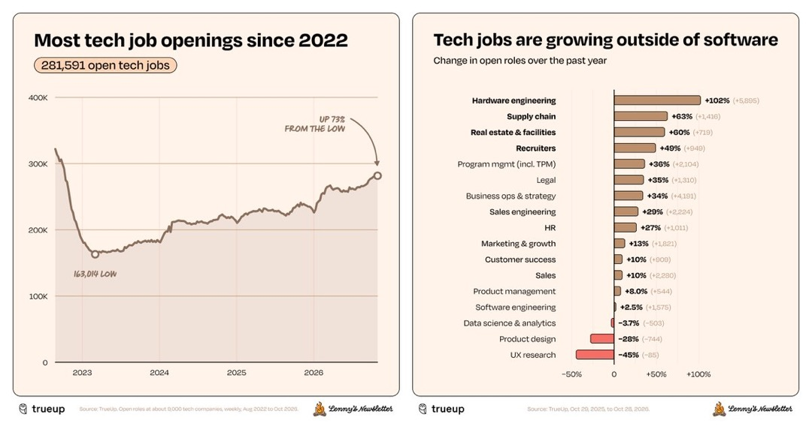
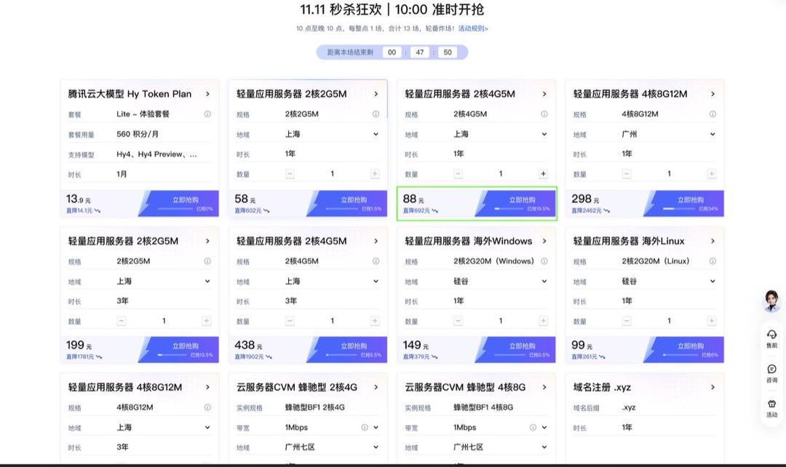

本期速览
01 高盛收回交易员编程工具权限
02 ADK换Pi Durable省去补丁层
03 科技业增长集中于AI实体岗位
05 Agent上下文与Skills精简提示词
06 LangChain倡导Eval驱动开发
07 50个AI Agent三月建成ERP
01｜高盛收回交易员编程工具权限
来源（X） · @grapeot · 2026-11-12 01:06
有意思的是，高盛唯独给坐在交易员旁边的量化策略师开了绿灯。高盛内部叫他们 strats，这群人本来就懂软件工程。不懂代码的人聊几分钟生成的脚本，程序员不敢直接信里面任何一行逻辑，逆向查漏洞、对齐金融零容错审计往往比从头写还累；高盛合伙人也提醒，年轻业务员把分析建模外包给大模型还会出现认知萎缩，慢慢失去独立推导业务问题的能力。
不写软件的交易员，为啥不用公司给的合规聊天助手，偏要抢程序员的命令行工具？因为网页聊天框碰不到本地表格，交易员发现编程智能体能直接读写电脑文件，就用它盯客户交易流、做持仓建模、自动出图表，当全能办公助理。就像 YC 掌门人 Garry Tan 透露的，他每年花 10 万到 20 万美元买 token，让智能体读遍全部邮件、Dropbox 文件和过去 20 年的心理咨询笔记。
对个人而言，在自家电脑上开权限无所谓，但在金融机构的终端上裸奔就很危险了。交易员的电脑连着敏感交易流和内部凭证，缺乏安全工程经验的人在本地终端随便跑脚本，一旦装错外部开源包或遭遇数据投毒，就会暴露长效密钥和内网权限，后台跑了危险命令也没法集中审计。
苹果在同一个月也在做同样的计算。他们一方面将年度研发支出大幅提升 32% 至 457.7 亿美元，用于基础设施和 AI 等；另一方面把部分工程师使用外部大模型的日上限从 300 美元降到 200 美元，并计划对部分工程团队降到 100 美元，堵住极少数人无限次刷单的情况，引导日常调用转向更便宜的模型和本地模型。
一个更具信号意义的变化是岗位之间的阶梯差距。苹果许多非技术团队原本日上限是 100 美元，现在正考虑把部分非技术团队压到每天 25 美元，有望跟软件工程师拉开 4 到 8 倍差距。重型工具和算力不再搞大锅饭，谁能直接产出可验证的工程结果，资源就向谁倾斜。
回到我们自己的团队，不让业务同学直接跑 Claude Code，也不用退回纯手工查表画图。这和 xAI 数据科学组集中维护共享数据机器人的经验相通：把高权限重型工具和充足算力留给能查代码、能为故障兜底的专业开发者，再由他们做好安全可控的内部专用工具给业务团队调用，协作反而更顺畅。完整的来龙去脉和大厂账本对比，我都写在了下面这篇长文里：
https://yage.ai/share/goldman-apple-ai-role-split-20261110.html?utm_source=twitter&utm_medium=thread&utm_campaign=goldman-apple-ai-role-split-20261110
02｜ADK换Pi Durable省去补丁层
来源（X） · @elzane26 · 2026-11-11 21:51
收益是：
* 原来由于 ADK 扩展性/功能不足打的一堆补丁完全消失
* 引入 codemode ，工具调用产生的轮次大幅减少
不过能顺利换轮子我本人也略有功劳，之前维护了一个相对比较干净的适配层和契约。🆒😎
后续公司内的系统集成 Agent 用 Pi Durable， 带外 Agent 用 DSH，预计这样的技术栈会稳定一段时间了。
03｜科技业增长集中于AI实体岗位
来源（X） · @oran_ge · 2026-11-12 07:39
就像工业革命对蓝领打击很大一样，
AI 这次是智能的工业革命，对白领的打击是很大的
1. 科技公司有超过281,000个空缺职位，比一年前增长了17%
2.产品经理、工程和设计职位仅增长了2%。
3. 设计（−28%）和用户体验研究（−45%）实际上是缩减了。
4. 那么增长从哪里来？硬件工程职位空缺翻了一番。业务运营新增了约4,200个空缺。供应链增长了63%。
许多增长最快的职位都是实体岗位：数据中心技术员、安装工、现场服务工程师。 人工智能热潮正在创造就业机会，但主要是建设并运营实体基础设施（芯片、数据中心、硬件），而不是构建软件。
引用内容
Lenny Rachitsky @lennysan
中文译文
科技行业就业市场正处于多年来最好的状态。但几乎没有增长来自软件岗位。
科技公司有超过281,000个空缺职位，比一年前增长了17%，比2023年3月的低谷增长了73%。
但空缺的PM、工程和设计岗位仅增长了2%。设计（−28%）和UX研究（−45%）实际上在萎缩。
那么增长来自哪里？硬件工程空缺岗位翻了一番。业务运营增加了约4,200个空缺岗位。供应链增长了63%。许多增长最快的职位都是实体类的：数据中心技术人员、安装工、现场服务工程师。
AI热潮正在创造就业，但主要是在建设和运营物理基础设施（芯片、数据中心、硬件），而不是构建软件。
时代，正在改变。
完整报告：https://www.lennysnewsletter.com/p/state-of-the-tech-job-market-late
原文
The tech job market is in its best shape in years. But almost none of the growth is coming from software jobs.
There are 281,000+ open roles at tech companies, up 17% from a year ago and 73% from the March 2023 low.
But open PM, eng, and design roles grew just 2%. Design (−28%) and UX research (−45%) actually shrank.
So where’s the growth coming from? Hardware engineering openings doubled. Business ops added ~4,200 openings. Supply chain is up 63%. Many of the fastest-growing jobs are physical: data center technicians, installers, field service engineers.
The AI boom is creating jobs, but mostly in building and running the physical infrastructure (chips, data centers, hardware), not building software.
Times, they are a-changin’.
Full report: https://www.lennysnewsletter.com/p/state-of-the-tech-job-market-late

04｜腾讯云双11轻量服务器88元年
来源（X） · @star_flow_ai · 2026-11-11 21:15
去年我还是靠新用户优惠，88 元买了一年轻量服务器，当时觉得已经够便宜了。
结果今年双 11，不用新用户资格，2 核 4G 5M 直接也是 88 元 / 年 ！
正好可以搞一台搭 FRP，远程控制自己电脑上的 Agent。
之前折腾 Tailscale 和 Cloudflare Tunnel，连接不稳定、延迟高，还得来回切 VPN。
自己用国内服务器搭个 FRP 中继，线路合适的话，延迟能低不少，也不用频繁切换 VPN 了。

05｜Agent上下文与Skills精简提示词
来源（X） · @HiTw93 · 2026-11-11 14:59
于是我就把最近做的继续沉淀成一些大伙也用得上的提示词，可以直接给到你的 Agent 去帮你优化你的项目的内容要求和 Skills，已经安装 Waza 的小伙伴可以直接更新到最新然后说「帮我精简一下规则」就好，也可以 Copy 下面内容给你的Agent。
帮我精简这个项目给 Agent 的上下文和我装的 Skills，按下面的要求来，先整理出清单给我确认，确认前先不改任何文件。
1. 先盘点每轮对话都会加载的内容，包括根目录的 AGENTS.md / CLAUDE.md、全局规则、没写 paths: 的 .claude/rules 和每个 skill 的描述，看各占多少字，再看按需加载的部分，这里不少看着臃肿的内容可能不是写多了，而是放的位置不对。
2. 逐段给出处理方式，分成修、删、挪、改写、保留五种，挪的写清目的地，每条附一句原因，做成一张清单给我确认。
3. 逐句判断删掉后你的行为会不会变，把类似这种「先读再改」「跑测试」「注意边界」你本来就会做的描述删掉，拿不准的可以先保留找我确定。
4. 我们更加推崇是给 Agent 写目标，少些如何实现的路线，写清做完是什么样、怎么算完成、要什么证据，一个步骤删掉后你还能换条路做到同样结果就删掉，只有顺序本身是约束的才留下来，比如先验证再发布、先确认再删除这种需要保留。
5. 同一种要求说了三遍，换成一个你本来就懂的词语，比如「快、确定、开销小」可以写成 tight；「要简洁」这类口号换成一个更好理解的想想的词语比如「报告腔」，然后再配一组 NO / OK 例子。
6. 把对应内容放对位置，需要判断的进 skill，同样输入总是同样输出的改成脚本或 hook，项目命令和发布步骤进项目指南，跨项目的硬约束才放进全局规则，遇到「做 Y 之前先读 X」这类要求改成做 Y 时由 hook 把 X 注入进来更好。
7. skill 描述只写做什么、什么时候用、不用于什么，近义词移到 when_to_use，只有部分场景用到的内容移到 references；判断一个 skill 有没有人用，要看真实调用记录，不要只 grep 名字，要删的也先列给我看一下。
8. 这些内容不要删除：
- 我的偏好、被否掉的方案和原因、机器环境。
- 不报错的坑，以及看着像出错其实正常的现象。
- 描述句里「从不写入」「不上传」这类半句约束。
- 删数据、需要花钱、要发布、提权、改写已推送历史这些不可逆操作的规则。
- 我们带日期的拍板决策记录。
9. 内容先移到对应正确的位置再来压缩，能整行搬到按需加载的文件里就整行搬，不要边搬边改写，不可逆的规则原样整段搬。
10. 把内容搬到能自己加载的地方可以参考这些技巧：
- 提交、发布、回复、删除这类对话里随时会触发的规则留在根目录。
- 挪进 docs/ 的要在根目录留一句什么时候去读。
- 根目录不要建 CLAUDE.md，它会让 Claude Code 不再读 AGENTS.md。
- 项目里重复全局规则的句子，只有在我用的每个工具都读全局规则时才删。
11. 改完以后自己去查一遍：paths: 里的 glob 都要能匹配到真实文件，grep 一遍拆走的旧文件名，再列出所有消失的行，每一行都要对上清单里我确认过的删除。
12. 交给一个没参与精简的 Agent 查有没有删过度了，只给它消失的行和仓库，不给你的结论，让它搜关键名词而不是整句，意思在哪都找不到的原样恢复。
13. 验证移过去的内容真的会被加载：在新文件里埋一个暗号，开一个新会话，先读一个匹配的文件再问它暗号，然后读一个不匹配的文件做反向对照。
14. 最后全部做完以后，可以帮我沉淀一下这个思路，方便以后有模型升级的时候，我可以再来跑一遍。
06｜LangChain倡导Eval驱动开发
来源（X） · @Fred834567 · 2026-11-11 12:40
他当时为了提效，顺手给系统加了个“自动建工单”的Skill。
结果在本地跑Eval测试时，分数直接飙升了快20%。他满心欢喜地推上线，第二天客服群直接炸了。
连客户问“VPN怎么连”、“怎么申请报销”这种普通咨询，这智障Agent全给人家自动建了报修工单。
运维老哥半夜爬起来处理假工单，差点顺着网线过去揍他。
他赶紧熬夜去扒Trace执行轨迹，才发现是因为那段工具描述写得太宽泛，大模型为了去“得分”，疯狂滥用了新权限。
所以这就是只盯着Eval均分狂欢的下场。
LangChain这篇的核心就在这：每次改Prompt、换Skill或者重构Harness，千万别凭感觉，必须拿固定的测试集去跑。
改完之后，不仅得看新功能行不行，更得看原本正常的老业务有没有被搞崩。
我们平时用大模型，总觉得改个词就能起飞。但实际上，大模型极度擅长钻空子。
如果你不搞一套独立的Holdout测试集，一直对着同一份题单去“优化”，它迟早给你过拟合到亲妈都不认识。
做Agent开发，别总想着写什么神级提示词，先把那些翻车的执行轨迹存下来当回归测试，比什么都强
引用内容
Xudong Han @Xudong07452910
文章主要介绍 Eval-Driven Development（EDD），核心思路是把 Eval 融入 Agent 的日常开发。
先定义什么算成功，写好 Eval、跑 Baseline，再修改 Prompt、Tool 或 Harness，通过相同的任务对比效果。
文中有个挺有意思的例子。
给知识库 Agent 新增 create_ticket 工具后，整体 Eval 分数提高了，结果它连「VPN 怎么连接」这种普通咨询都开始创建故障工单。
通过 Trace 排查才发现，工具描述太宽泛，导致 Agent 错误调用了工具。
这也说明不能只看 Eval 平均分。一次改动可能让新任务表现更好，却破坏原本正常的功能。除了最终结果，还需要检查执行轨迹，并保留独立测试集，避免反复优化导致过拟合。
这套思路很值得借鉴，尤其是现在大家都在不断调整 Skill、Prompt 和 Harness。
新增一个 Skill、修改一段 Workflow，甚至删掉旧 Harness，都应该通过 Eval 判断是否真的有效。
感觉 Eval-Driven Development 很值得成为 Agent 开发中的常规习惯，每次迭代都能有据可依。
原文：https://www.langchain.com/blog/what-is-eval-driven-development
07｜50个AI Agent三月建成ERP
来源（X） · @Achamsedine · 2026-11-12 01:41
中文译文
我们用50个独立的AI智能体在3个月内开发了一个ERP系统。
如今，它已被一家年营收达20亿欧元的企业用于生产环境。
库存、B2B/B2C销售、盘点、物流、集装箱跟踪、离线功能、报价、配送、POS收银台、薪资、HR……
但这个故事中最有趣的部分不是ERP本身，而是我们构建它的方式。
我们创建了一支真正的50个专业AI智能体团队：高级开发人员、CTO、架构师、产品经理、QA、代码审查员……每个都有自己的角色、上下文和职责。
一部分运行在Mac Mini上，使用OpenClaw和Hermes。另一部分依赖Grok @bot进行任务协调和跟踪。
真正的变革在于harness：即规范智能体工作的基础设施。
每个功能都被拆解为精确的任务，带有依赖关系、职责和验收标准。
智能体之间协作，但不能自行决定工作是否完成。验证是独立的，修改会被追踪，记忆在会话之间持久保留。
结果：在某些可比的功能上，我们从预估10-15个人日/Claude Code的开发周期缩短到了大约3天全AI。
显然，一切并不完美。仍然需要良好的监督、仲裁、测试和修正。
但经过3个月，我得出一个信念：
如今，几乎每个人都可以用AI生成代码。
但生成代码和构建一个复杂的、可靠的、可维护的软件，是两件非常不同的事情。
让50个AI智能体工作是不够的。关键在于懂得分配职责、管理依赖关系、协调任务和验证结果。
harness engineering使得规范智能体的工作成为可能。但当从几个智能体扩展到几十个时，另一个挑战出现了：它们的集体组织。
这就像在企业中一样。你可以召集50个优秀的工程师和开发者：没有协调、没有流程、没有明确的职责划分，你得到的就是混乱。
下一个前沿不仅仅是构建更强大的智能体或更聪明的LLM。
而是构建能够一起工作、大规模运作、具备真正工程团队可靠性的智能体组织。
我认为，未来几年的大部分竞争优势将在这一点上见分晓。
原文
On a développé un ERP en 3 mois avec 50 agents IA distincts.
Aujourd’hui, il est utilisé en production par une entreprise qui réalise 2 milliard d’euros de chiffre d’affaires.
Stocks, Sales b2b/b2c, inventaires, logistique, suivi des conteneurs, offline, devis, livraisons, caisse POS, paie, HR…
Mais le plus intéressant dans cette histoire, ce n’est pas l’ERP, c’est la manière dont on l’a construit.
On a créé une véritable équipe de 50 agents IA spécialisés : développeurs seniors, CTO, architectes, product owners, QA, reviewers… Chacun avec son rôle, son contexte et ses responsabilités.
Une partie tourne sur Mac Mini avec OpenClaw et Hermes. L’autre s’appuie sur des bots Grok @bot pour la coordination et le suivi des tâches.
Le véritable changement, c’est le harness : l’infrastructure qui encadre le travail des agents.
Chaque fonctionnalité est découpée en tâches précises, avec des dépendances, des responsabilités et des critères de validation.
Les agents collaborent, mais ne décident pas seuls si leur travail est terminé. Les vérifications sont indépendantes, les modifications sont tracées et la mémoire persiste entre les sessions.
Résultat : sur certaines fonctionnalités comparables, nous sommes passés de cycles de développement estimés à 10-15 jours humain/claude Code à environ 3 jours full IA.
Évidemment, tout n’est pas parfait. Il faut encore bien superviser, arbitrer, tester et corriger.
Mais après 3 mois, j’en tire une conviction :
Aujourd’hui, presque tout le monde peut produire du code avec l’IA.
Mais produire du code et construire un logiciel complexe, fiable et maintenable, ce sont deux choses très différentes.
Faire travailler 50 agents IA ne suffit pas. Encore faut-il savoir répartir les responsabilités, gérer les dépendances, coordonner les tâches et vérifier les résultats.
Le harness engineering permet d’encadrer le travail des agents. Mais quand on passe de quelques agents à plusieurs dizaines, un autre défi apparaît : leur organisation collective.
C’est exactement comme dans une entreprise. Vous pouvez réunir 50 excellents ingénieurs et développeurs : sans coordination, sans processus et sans responsabilités clairement définies, vous obtenez du chaos.
La prochaine frontière n’est pas seulement de construire des agents plus performants ou des LLM plus intelligentes.
C’est de construire des organisations d’agents capables de travailler ensemble, à grande échelle, avec la fiabilité d’une véritable équipe d’ingénieurs.
Et je pense que c’est là que se jouera une grande partie de l’avantage compétitif des prochaines années.